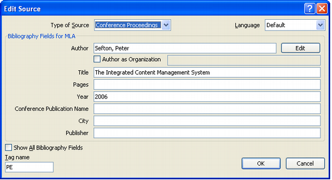
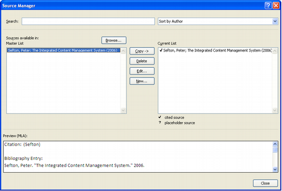
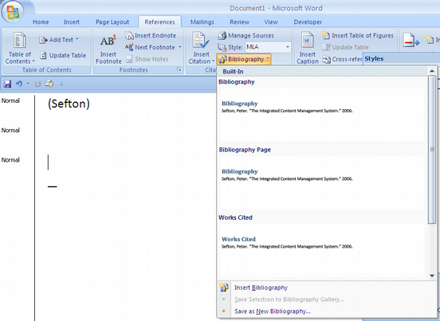

Yet another untitled post
2006-06-09
I promised to have a look at bibliography and citation support in Word 2007. Prompted by Bruce D'Arcus.I had a really quick look at it this morning.
I mean really a really quick look.
I managed to input a single record in 'Sources' – which is where Word keeps its bibliographic data, insert a citation and format a bibliography.
Adding a 'source'
Adding a 'source' gets you a dialogue where you can choose from a number of types of source. I chose Conference Proceedings so I could try putting in a reference to my ICE paper.
The big problem here is that there is nowhere to put a URL! And not obvious way to change the fields.

Managing sources
Having created a single source you can manage multiple sources. This is a screenshot showing something that looks a bit like the organizer Word uses for managing styles and toolbars and stuff. I don't know where the 'Master list' is stored yet.

Formatting a bibliography
You can format a bibliography in a number of styles. The one we use a lot where I work, Harvard is not listed. And there's no obvious way to add new styles. The help is no help.
Switching between the bibliographic styles instantly reformats both the citation and the bibliography.

What's happening under the covers?
Bruce D'Arcus did an autopsy on my sample file and concluded that there are good and bad points to the way bibliographies are implemented. Bruce likes the way reference information is stored in the file. Me, I don't because this is not backwards compatible with previous versions of Word.
There are some alarming things in the file format like strings that need to be parsed rather than pure XML. I'm sure there'll be discussion on the bibliographic dev list at openoffice.org so tune in there if you are interested.
Questions
There's a lot to ask here. The system seems very undercooked.
-
Can I change the data model for sources? One huge issue is that URLs are kind of important these day and they're not there.
-
Can I query library systems like I can with EndNote?
-
Speaking of which can I import EndNote data? Any other data?
-
How do I define my own bibliography formats (nothing in the help). And can I please use CSL?
-
Where's the ability to store the PDF or HTML version of source locally?
-
Why isn't Google Scholar one of the online sources I can search?
What I think
I think that we are going to end up with a huge mess in this area, with incompatible implementations of embedded bibliographic data from OpenDocument and Open XML, with no backwards compatibility for Word versions earlier than 2007. Some people at USQ use EndNote, but unless it gets OpenDocument support it won't interoperable either.
Unless someone can pull all this together in the standards committees, that is.
I think that the open source community should put effort into a more microformat-style approach. My idea is to use hyperlinks as citation markers and make a stand-alone web-enabled bibliography tool (which is where the hyperlinks would point) that can live either on your computer or on a server and can synchronize libraries. This tool would be able to format bibliographies for OpenDocument and MS Word.
I think that before too long we'll be looking at making ICE more bibliographically adept, maybe even using ICE's already established ability to work with distributed content to allow sharing our bibliographic data and the source documents.